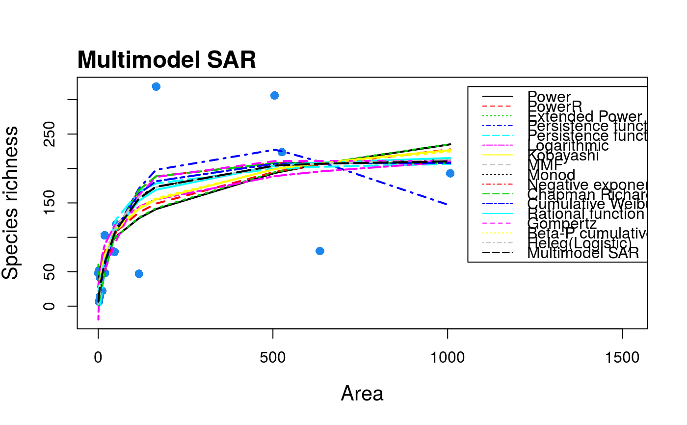

Construct a multimodel averaged species-area relationship curve using information criterion weights and up to twenty SAR models.
sar_average(obj = c("power", "powerR","epm1","epm2","p1","p2","loga","koba", "mmf","monod","negexpo","chapman","weibull3","asymp", "ratio","gompertz","weibull4","betap","heleg", "linear"), data = NULL, crit = "Info", normaTest = "lillie", homoTest = "cor.fitted", neg_check = FALSE, alpha_normtest = 0.05, alpha_homotest = 0.05, confInt = FALSE, ciN = 100, verb = TRUE)
| obj | Either a vector of model names or a fit_collection object created
using |
|---|---|
| data | A dataset in the form of a dataframe with two columns: the first
with island/site areas, and the second with the species richness of each
island/site. If |
| crit | The criterion used to compare models and compute the model
weights. The default |
| normaTest | The test used to test the normality of the residuals of each model. Can be any of "lillie" (Lilliefors Kolmogorov-Smirnov test; the default), "shapiro" (Shapiro-Wilk test of normality), "kolmo" (Kolmogorov-Smirnov test), or "none" (no residuals normality test is undertaken). |
| homoTest | The test used to check for homogeneity of the residuals of each model. Can be any of "cor.fitted" (a correlation of the residuals with the model fitted values; the default), "cor.area" (a correlation of the residuals with the area values), or "none" (no residuals homogeneity test is undertaken). |
| neg_check | Whether or not a check should be undertaken to flag any models that predict negative richness values. |
| alpha_normtest | The alpha value used in the residual normality test (default = 0.05, i.e. any test with a P value < 0.05 is flagged as failing the test). |
| alpha_homotest | The alpha value used in the residual homogeneity test (default = 0.05, i.e. any test with a P value < 0.05 is flagged as failing the test). |
| confInt | A logical argument specifying whether confidence intervals should be calculated for the multimodel curve using bootstrapping. |
| ciN | The number of bootstrap samples to be drawn to calculate the
confidence intervals (if |
| verb | verbose (default: |
A list of class "multi" and class "sars" with two elements. The first element ('mmi') contains the fitted values of the multimodel sar curve. The second element ('details') is a list with the following components:
mod_names Names of the models that were successfully fitted and passed any model check
fits A fit_collection object containing the successful model fits
ic The information criterion selected
norm_test The residual normality test selected
homo_test The residual homogeneity test selected
alpha_norm_test The alpha value used in the residual normality test
alpha_homo_test The alpha value used in the residual homogeneity test
ics The information criterion values (e.g. AIC values) of the model fits
delta_ics The delta information criterion values
weights_ics The information criterion weights of each model fit
n_points Number of data points
n_mods The number of successfully fitted models
no_fit Names of the models which could not be fitted or did not pass model checks
The summary.sars function returns a more useful summary of
the model fit results, and the plot.multi plots the
multimodel curve.
The multimodel SAR curve is constructed using information criterion
weights (see Burnham & Anderson, 2002; Guilhaumon et al. 2010). If
obj is a vector of n model names the function fits the n models to
the dataset provided using the sar_multi function. A dataset must
have four or more datapoints to fit the multimodel curve. If any models
cannot be fitted they are removed from the multimodel SAR. If obj is
a fit_collection object (created using the sar_multi function), any
model fits in the collection which are NA are removed. In addition, if any
other model checks have been selected (i.e. residual normality and
heterogeneity tests, and checks for negative predicted richness values),
these are undertaken and any model that fails the selected test(s) is
removed from the multimodel SAR. The order of the additional checks inside
the function is: normality of residuals, homogeneity of residuals, and a
check for negative fitted values. Once a model fails one test it is removed
and thus is not available for further tests. Thus, a model may fail
multiple tests but the returned warning will only provide information on a
single test.
The resultant models are then used to construct the multimodel SAR curve.
For each model in turn, the model fitted values are multiplied by the
information criterion weight of that model, and the resultant values are
summed across all models (Burnham & Anderson, 2002). Confidence intervals
can be calculated (using confInt) around the multimodel averaged
curve using the bootstrap procedure outlined in Guilhaumon et al (2010).The
procedure transforms the residuals from the individual model fits and
occasionally NAs / Inf values can be produced - in these cases, the model
is removed from the confidence interval calculation (but not the multimodel
curve itself). When several SAR models are used and the number of
bootstraps (ciN) is large, generating the confidence intervals can
take a long time.
The sar_models() function can be used to bring up a list of the 20
model names. display_sars_models() generates a table of the 20
models with model information.
Occasionally a model fit will converge and pass the model fitting
checks (e.g. residual normality) but the resulting fit is nonsensical (e.g.
a horizontal line with intercept at zero). Thus, it can be useful to plot
the resultant 'multi' object to check the individual model fits. To re-run
the sar_multi function without a particular model, simply remove it
from the obj argument.
The generation of confidence intervals around the multimodel curve (using
confInt == TRUE), may throw up errors that we have yet to come
across. Please report any issues to the package maintainer.
Burnham, K. P., & Anderson, D. R. (2002). Model selection and multi-model inference: a practical information-theoretic approach (2nd ed.). New-York: Springer.
Guilhaumon, F., Mouillot, D., & Gimenez, O. (2010). mmSAR: an R-package for multimodel species-area relationship inference. Ecography, 33, 420-424.
data(galap) #attempt to construct a multimodel SAR curve using all twenty sar models fit <- sar_average(data = galap)#> #> Now attempting to fit the 20 SAR models: #> #> ── multi_sars ─────────────────────────────────────────────────────────────────────────────────── multi-model SAR ── #> → power : ✔ #> → powerR : ✔ #> → epm1 : ✔#> #>#> → epm2 : ✔ #> → p1 : ✔ #> → p2 : ✔ #> → loga : ✔ #> → koba : ✔ #> → mmf : ✔ #> → monod : ✔ #> → negexpo : ✔ #> → chapman : Warning: could not compute parameters statistics #> → weibull3 : ✔ #> → asymp : ✔ #> → ratio : ✔ #> → gompertz : ✔ #> → weibull4 : ✔ #> → betap : ✔ #> → heleg : ✔ #> → linear : ✔ #> #> Model fitting completed - all models succesfully fitted. Now undertaking model validation checks. #> Additional models will be excluded if necessary:#> #> #>#> 16 remaining models used to construct the multi SAR: #> Power, PowerR, Extended Power model 2, Persistence function 1, Persistence function 2, Logarithmic, Kobayashi, MMF, Monod, Negative exponential, Chapman Richards, Cumulative Weibull 3 par., Rational function, Gompertz, Beta-P cumulative, Heleg(Logistic) #> ─────────────────────────────────────────────────────────────────────────────────────────────────────────────────────summary(fit)#> #> Sar_average object summary: #> #> 16 models successfully fitted #> #> The following models could not be fitted or were removed due to model checks: #> Extended Power model 1, Asymptotic regression, Cumulative Weibull 4 par., Linear model #> #> Ranked models based on AICc weights: #> #> Model Weight AICc R2 R2a Shape Asymptote #> 1 negexpo 0.219 141.426 0.557 0.488 convex up TRUE #> 2 monod 0.178 141.840 0.545 0.475 convex up TRUE #> 3 koba 0.118 142.667 0.521 0.447 convex up FALSE #> 4 power 0.073 143.625 0.491 0.413 convex up FALSE #> 5 loga 0.067 143.785 0.486 0.407 convex up FALSE #> 6 p1 0.066 143.840 0.589 0.486 convex up FALSE #> 7 gompertz 0.061 143.987 0.585 0.482 convex up TRUE #> 8 weibull3 0.038 144.918 0.561 0.451 convex up TRUE #> 9 chapman 0.036 145.062 0.557 0.446 convex up TRUE #> 10 ratio 0.035 145.088 0.556 0.445 convex up TRUE #> 11 heleg 0.029 145.476 0.545 0.431 convex up TRUE #> 12 mmf 0.029 145.476 0.545 0.431 convex up TRUE #> 13 p2 0.019 146.306 0.521 0.401 convex up FALSE #> 14 powerR 0.014 146.877 0.503 0.379 convex up FALSE #> 15 epm2 0.014 146.923 0.502 0.377 sigmoid FALSE #> 16 betap 0.002 150.612 0.522 0.349 convex up FALSEplot(fit)# construct a multimodel SAR curve using a fit_collection object ff <- sar_multi(galap, obj = c("power", "loga", "monod", "weibull3"))#> #> Now attempting to fit the 4 SAR models: #> #> ── multi_sars ─────────────────────────────────────────────────────────────────────────────────── multi-model SAR ── #> → power : ✔ #> → loga : ✔ #> → monod : ✔ #> → weibull3 : ✔fit2 <- sar_average(obj = ff, data = NULL)#> #> Now undertaking model validation checks. Additional models will #> be excluded if necessary #> #> All models passed the model validation checks #> #> 4 remaining models used to construct the multi SAR: #> Power, Logarithmic, Monod, Cumulative Weibull 3 par. #> ─────────────────────────────────────────────────────────────────────────────────────────────────────────────────────summary(fit2)#> #> Sar_average object summary: #> #> 4 models successfully fitted #> #> All models were fitted successfully #> #> Ranked models based on AICc weights: #> #> Model Weight AICc R2 R2a Shape Asymptote #> 1 monod 0.499 141.840 0.545 0.475 convex up TRUE #> 2 power 0.205 143.625 0.491 0.413 convex up FALSE #> 3 loga 0.189 143.785 0.486 0.407 convex up FALSE #> 4 weibull3 0.107 144.918 0.561 0.451 convex up TRUE